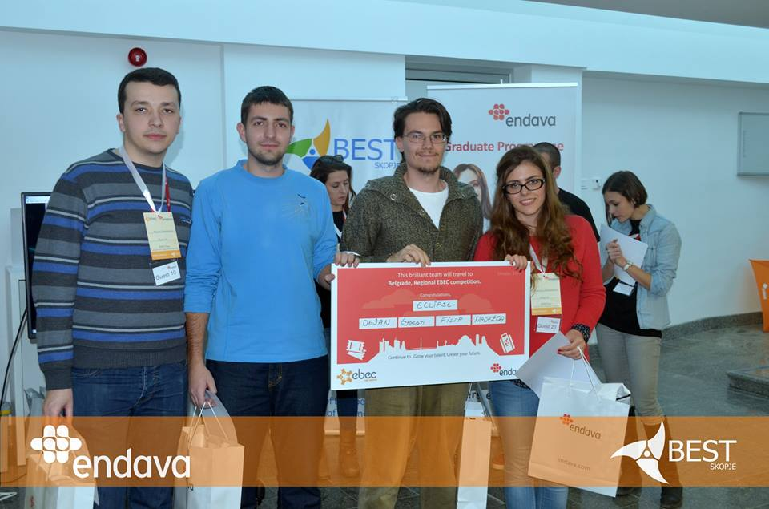
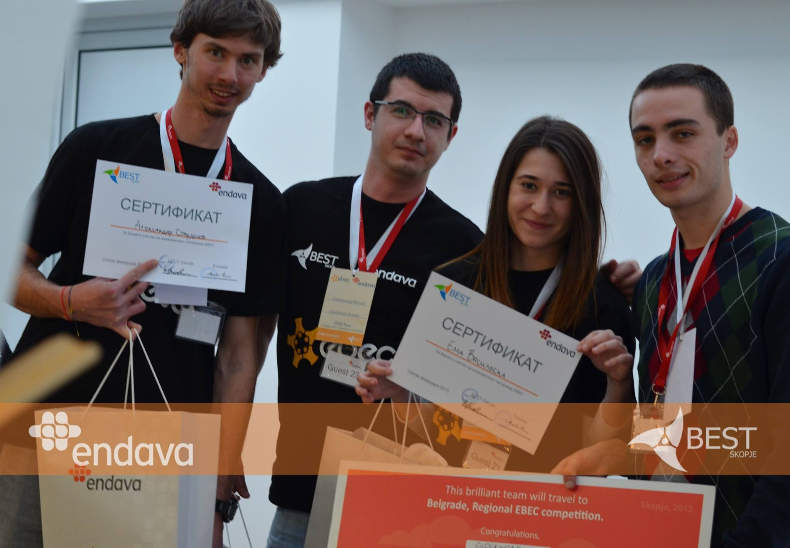

EBEC 2016 finished successfully
After the long preparations and the big commitment of the organisers, the official opening day, the debate and the two competing days, EBEC 2016 had a successful end. We are glad to announce the winners from the two competing categories: Case study was won by team IEEE - Fantastic four. We congratulate Ивона Ристова, Гоце Симоновски, Мими Прочкова и Антонио Филипоски. Team Design was won by team R2D2 assembled by Стефан Алексовски, Марјана Петковска, Столе Јовановски и Надежда Аврамовска. We wish them luck on the upcoming EBEC regional competition which will take place in Podgorica, Montenegro.
Posted on: february 2016
Case study

On 17th february began the EBEC - Case Study competition. The participating teams were: Cimeri, IEEE - Fantastic Four, Noe и Shannon. The theoretical problem "Skopje Reborn", was a big problem for the competitors, but also for the jury who after the 15th minute presetations of each team would announce the winner. The very next day teams Kompir Co, Glen Coco, IEEE и R2D2 were competing in Team Design category.
Team design

We express our gratitude to the jury who assessed the tasks very carefully and objectively, featuring:
Д-р Кирил Лисичков - Professor of Faculty of Technology and Metallurgy, institute of processing and controlling engineering
Д-р Оливер Зајков - Professor of Faculty of Natural sciences, institute of physics
Доц. Д-р. Дивна Пенчиќ - Professor of Faculty of Architecture
Андреј Апостолски - Habitat representative for Humanity Macedonia
Official Closing day and debate


The last day was closed with the BEST president's, main organisers' speech. After that a debate took place entitled "How to have a proactive staff" whose facilitator was Стефан Серафимовски, active member of BEST Skopje. There were also students from the tehnical faculties and representatives from the companies.
EBEC 2016 finished successfully!
After a few months of preparation, the official opening, the debate and also the two EBEC days, it ended successfully. We have the two winning teams who will continue their journey on a regional level in Belgrade. The Team design category was won by team Eclipse whose team was assembled by Дејан Божиновски, Ѓорѓи Јанчески, Филип Давковски и Надежда Аврамовска, while the category Case Study was won by team Clockwork Orange assembled by Митко Милошев,Александар Старделов, Ема Василевска, Александар Митиќ.
Posted on: february 2015
Case study
Team Eclipse won in the Case Study category
Team design
Team Clockwork Orange won in the Team Design category
EBEC Balkan 2014
BEST Skopje together with the team assembled by Филип Божиновски, Никола Анѓелковиќ, Сашо Јадровски и Кристина Блажевска write history for the engineering competition. For a second time the team from Skopje, who took the first place in the regional competition in Nish, Serbia in the Case Study category, the team Fast Forward has the honour to defend the colours of LBG Skopje on the final competition in Riga, Latvia this summer. The event will take place between 1-9 August and our competitors will try to win it for the third time. BEST Skopje congratulates and wishes them luck on the upcoming final competition.